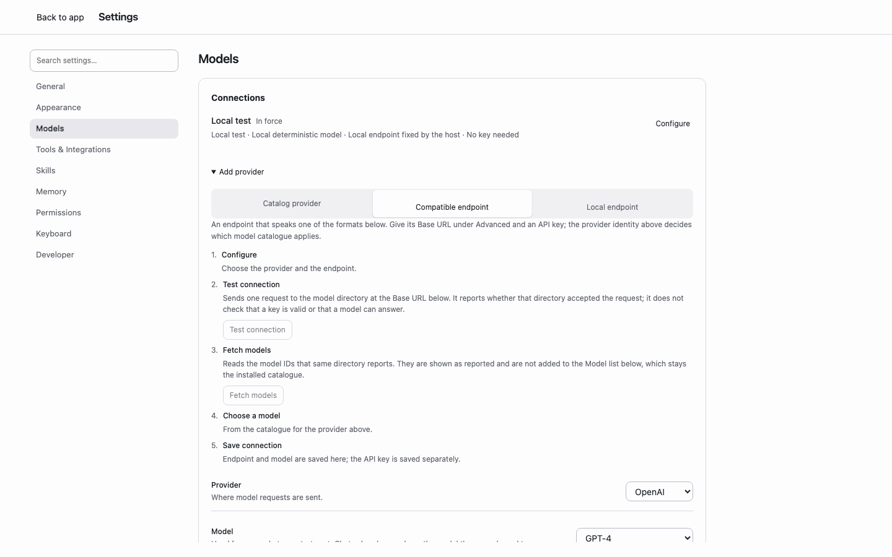

Local
$0
Open source
Your work stays yours.
- Local Matter store
- Event log & provenance
- Local runtime, bring your own provider or local models
- Public eval suite
- Exportable schemas
- MIT source
CourtWorkA place for expert work to take form.
在本地处理材料，与 AI 一起推进专业工作。工具调用清晰可见，候选带着证据进入审阅，决定与文件留在事项里，下一次打开就能接着做。
Read the paperRun it locallySource

9e5384f · synthetic data · local deterministic provider · 1440×900 light · Home：两个 Project，一个 Chat 在等待一次写入批准。01
Work agents need governed state, not longer transcripts.
Agent 需要的是受治理的状态，不是更长的对话记录。
一次工作，三个视角：发生了什么、留下了什么、下一次带上什么。
按时间追踪请求、工具调用、批准、回答与结果。随时回到工作的任何一步。
verified with synthetic data
034 user.message
035 run.status
036 runtime.bound
037 assistant.delta
038 assistant.delta
039 assistant.delta
040 assistant.delta
041 assistant.message
042 tool.start
043 tool.result
044 assistant.delta
045 assistant.delta
046 assistant.delta
047 assistant.delta在同一个工作面查看候选、证据、决定与版本。每次审阅，推动事项向前。
verified with synthetic data
matter Synthetic inbound NDA
sources 1
candidates 1
decisions 0
stateVersion 2b11e123ccaa928fba1e159942c637a93cebdf56a267b4774ce178cdeeee941b查看每次运行使用的资源、版本与上下文，以及实际的 token 用量。
verified with synthetic data
mode recorded-run
revision 0
hash 905247de045aaef920ad309e17a6f5e0d24ca48c119c4c211d2aeb410d6f4bca
resources 24
loaded 0
tokenUsage input 2 · output 3 · turns 2synthetic data · recorded at CourtWork 9e5384f · 三个视图读取同一份记录
02
从第一条请求，到一次有据可循的决定。
跟随一份 NDA，走过工具调用、写入批准、提问、文件生成和候选审阅。选择任一步，查看当时的工作状态。
1Home
写下要做的工作。选一个 Project，并决定文件如何被编辑：Ask before editing、Allow edits，或 Read only。
runs locally
2Run
每一次工具调用在发生时显示，不藏在摘要后面。
verified with synthetic data
3Approval
写入之前 Agent 先问。你看到确切的路径、大小与内容 hash，只批准这一次写入。
verified with synthetic data
4Question
需要一个事实时 Agent 提问；回答随 Run 一起记录。回答不等于授权。
verified with synthetic data
5File
打开这次 Run 产生的文件。它的身份是记录下来的字节，不是聊天里的一段文字。
verified with synthetic data
6Stop · reconnect
取消 Run，关掉页面，再回来：Chat 显示最后一次确认的状态。
not recorded in this replay
7Continue in Work
把这个 Chat 绑定到一个 Matter。历史与 Project 都保留；不复制，不迁移。
verified with synthetic data
8Candidate → Decision
候选逐条附证据与来源。人接受、退回，或要求补证据；正式成果与候选分开。
verified with synthetic data
Interactive replay · synthetic NDA
逐步查看一次 NDA 工作的完整记录。
03
模型负责搜索、比较、起草与执行。CourtWork 把材料、成果、审阅决定和未完事项留在一起。一次运行结束，工作继续。
每次运行从当前状态与相关材料开始。新的提议携带来源进入候选区，经验证与审阅后成为正式变化。
更换模型，开启新的会话，或隔一段时间再回来。已确认的决定、当前版本和待办义务依然有迹可循。
Built on Schema Engineering 9.6. 从论文中的工作状态模型，到可以运行、审阅与复现的实现。
04
把候选、证据与来源放在一起。看清依据，再作决定。
逐条展开依据，比较修订，保留决定的完整来路。

9e5384f · synthetic data · local deterministic provider · 1440×900 light · Work Review：一条候选待决定。05
打开记录，检查方法，亲自复现。
| 项 | 文案 | 入口 |
|---|---|---|
| Benchmark | Continuity conformance：六个用例覆盖来源替换、回执重放、重启、身份校验与版本冲突。 | benchmarks/continuity/ |
| Fixture | 由真实 HTTP、Pi loopback 与 Core 生成的确定性数据包，附 sha256。 | app/tests/fixtures/work-core/nda-packets.json |
| Tests | 固定产品版本的完整应用测试。 | npm --prefix app test · 308 passed, 0 failed |
| Version | Paper 9.6 d78fd31 · 产品 9e5384f · 站点 d54f216 | PAPER.md |
| Decisions | 架构裁决，从第一条起可读。 | engineering/decisions.md |
| Paper revision | 论文的版本级变化。 | CHANGELOG.md（Schema Engineering） |
从输入、运行方法到原始结果，完整检查一次 continuity conformance 测试。
benchmarks/continuity/run.mjs 编排六个用例；E 经 CoreClient 驱动真实 Core，S 经 standard.py；observe.mjs 把原始输出映射为语义字段，grade.mjs 独立校验。CourtWork 9e5384f。node --test benchmarks/continuity/grade.test.mjs；node benchmarks/continuity/run.mjs --output /absolute/path/result.json。需要仓库根目录、Node 22.19 以上、Python 3 标准库；输出文件须是新文件；不用 provider、不联网。E 6/6 · S 6/6 · se-continuity-conformance-v1 · CourtWork 9e5384f · model null
拒绝结果的四个名字（stale_source · request_conflict · authority_rejected · version_conflict）是被测系统的正确拒绝，不是评测的失败分类。
| 可写的声称 | 状态 | 证据入口 |
|---|---|---|
| 从独立 clone 安装、测试、启动 | verified with synthetic data | evidence/final-integration-20260908/sync.md |
| Run 链：回答、精确写入批准、文件身份、预览、拒绝、停止、断线重连 | verified with synthetic data | evidence/final-integration-20260908/README.md |
| 运行控制：配置 CAS、来源、上下文、MCP 生命周期 | verified with synthetic data | evidence/rc/ |
| MCP 未知效果后封闭后续调用 | verified with synthetic data | evidence/final-integration-20260908/mcp-unknown.json |
| Continue in Work：Chat 绑定 Matter，历史与 Project 保留 | verified with synthetic data | evidence/fe03/ |
| 合成 NDA：逐规则候选 → 审阅 → 正式决定；幂等与过时版本拒绝 | verified with synthetic data | evidence/wk10b2-main-integration-20260908/ |
| 新 Session 继续同一事项；产生候选的一方缺席时历史可读 | verified with synthetic data | evidence/se-continuity-20260908/ |
| Models：Catalog provider · Compatible endpoint · Local endpoint；Test connection、Fetch models | runs locally | evidence/fe03-main-integration-20260909/ |
| Settings 整页；Appearance 本设备偏好 | runs locally | evidence/cc-s-main-integration-20260909/ |
| 真实模型 provider 路径 | not yet | 用户在界面配置 |
| 有界模型 pilot 与对比分数 | not yet | — |
| 事项级记忆、Temporary chat | not yet | — |
| 桌面安装包、签名 | not yet | — |
每份记录包含对应版本、运行条件与验证范围。
06
CourtWork 运行在 Pi agent SDK（@earendil-works/pi-* 0.85.1）与官方 MCP client 2.0.0 之上；harness core 管理策略、状态与审阅。
Model usage is separate. 模型请求发往你配置的 provider 或本地模型；CourtWork 不经手模型账单。
07
Concept pricing
这一节回答的是“从个人工作，到团队协作”，不是报价。CourtWork 现在不出售任何东西。三条轨道是一份产品模型的研究稿，把 local-first、自带模型、Expert、Eval、治理与组织保证压成一眼能懂的形状。
Your work. Your models. Room to grow.
工作留在手里，模型自由选择。
$0
Open source
Your work stays yours.
$29 / month
Managed
A maintained professional workbench.
Custom
Private deployment
Governed work at organizational scale.
Model usage is separate. Bring your own provider, use local models, or use managed inference with a spending cap.
模型用量另计：自带 provider、用本地模型，或用带上限的托管推理。
从本地到组织，材料、事件与版本始终随工作同行。
08
git clone https://github.com/lesPrivilege/Courtwork.git
cd Courtwork
npm --prefix app ci
npm --prefix app start -- --data-dir /absolute/path/outside-repo/courtwork-data --port 8845
npm --prefix app test需要 Node.js 22.19 以上、Python 3、Git 2.36 以上。默认 provider 是本地确定性 fake；真实 provider 在界面里配置，密钥不进入仓库、聊天或截图。

9e5384f · synthetic data · local deterministic provider · 1440×900 light · Settings › Models：Compatible endpoint 的两个探测控件在场，未填写端点，未存任何密钥。| 入口 | 文案 |
|---|---|
README.md | 运行、验证与范围。 |
engineering/current.md | 已交付能力、证据边界、下一单。 |
engineering/architecture.md | 模块所有权与边界。 |
engineering/roadmap.md | 长期路线与验证门。 |
docs/runtime-control/INDEX.md | 资源、权限、MCP 与上下文绑定。 |
docs/interface-components.md | 布局、消息、工作面、焦点与状态 owner。 |
PAPER.md | 采用的论文版本与反馈路径。 |